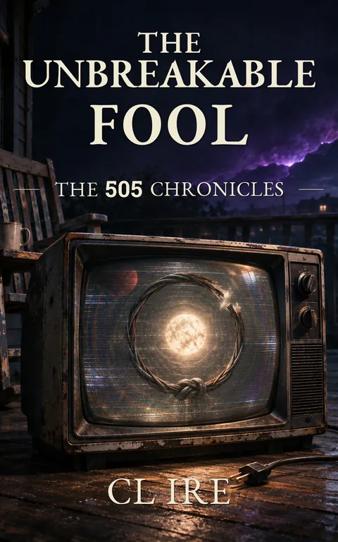

The Unbreakable Fool
A Harbor City Memoir The Book of Earl
They gave him a word meant to turn his body into a prison. He turned the prison into an engine.
Kindle Unlimited reader? Membership eligibility for individual books is shown on Amazon. The format links above are paid affiliate links.
Purchase links open Amazon. Format availability is taken from the public catalog record.
What is on file
They gave him a word meant to turn his body into a prison.
He turned the prison into an engine.
It began with a television.
A little boy discovers that the hum behind the walls is more than electricity, that attention can cross boundaries, and that the world sometimes responds when it shouldn't.
Then an ordinary childhood prank goes wrong.
Read the complete filed description
An adult speaks a single word, and something impossibly heavy settles inside the boy's chest. Shame becomes mass. His body becomes a cage. And the only way out is to learn the physics of a prison nobody else can see.
He aims for the moon.
He misses.
And somewhere beyond the familiar world, he discovers that even the most personal suffering can become fuel for somebody else's machinery.
But childhood is only the beginning.
Years later, the boy has become a man navigating strange signals, broken relationships, impossible patterns, and a long journey through the American West. As reality grows increasingly difficult to trust, he begins building something of his own.
A Bunker.
A place with rules that cannot be rewritten by someone else's anger. A place where records survive, doors remain doors, and people are allowed to arrive without first proving they deserve shelter.
Then the Stray knocks.
Then the storm comes.
And the final evidence is written not in the sky, but in torn clothing, ruined shoes, and the stubborn testimony of a man who refuses to let the record disappear.
One chapter has been redacted.
The narrator knows.
He isn't telling you why.
THE UNBREAKABLE FOOL, Book One of The 505 Chronicles, is an ambitious, darkly funny work of mythic speculative fiction blending cosmic mystery, psychological horror, unreliable testimony, and the intimate mechanics of survival.
Part impossible childhood. Part western odyssey. Part bunker manual. Part black-box recording from a universe that may not be as indifferent as it pretends.
A real harbor does not demand that the boat be seaworthy before it is allowed to tie up.
Further material may surface.
No connected records are currently listed for this entry. Connections are added only when the archive can support them, and not merely because two stories share a city.
Request filing notices ↗